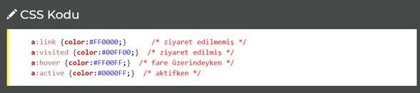

CSS Bağlantılar
Sitenizdeki bağlantıları CSS kullanarak şekillendirmek için bazı özel eklerden faydalanılır.
Bir bağlantı dört farklı şekilde stillendirilebilir. Bunlar:
- a:link - Normal link görünüşü
- a:visited - Ziyaret edilmiş siteye giden link görünümü
- a:hover - Fare ile üzerine gelindiğindeki görünüş
- a:active - Tıklanılan andaki görüntüsü

Yukarıdaki bağlantı biçimlerini sıralarken uymamız gereken bir sıra vardır. Bu sıraya uyulmazsa bağlantı görünümleri doğru çalışmayabilir.
- a:hover her zaman a:link ve a:visited den SONRA gelmeli.
- a:active her zaman a:hover dan SONRA gelmeli.